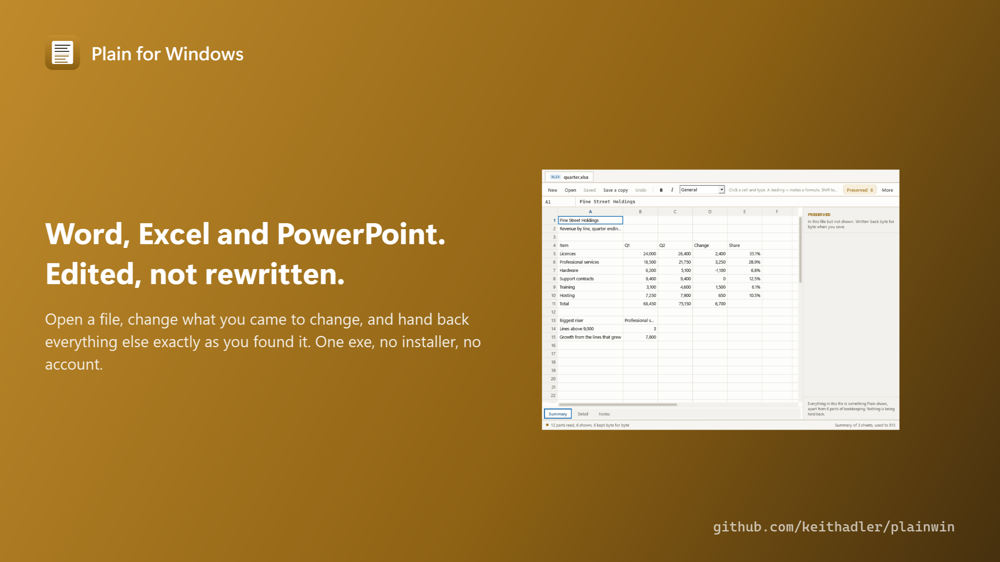
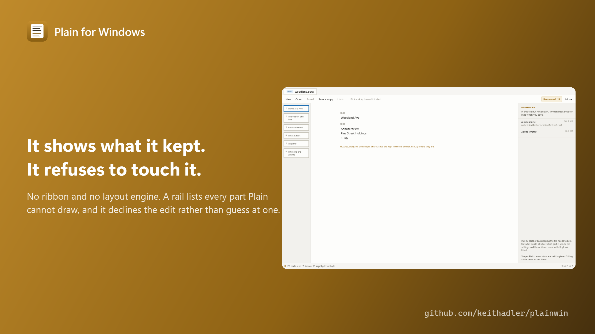

Word, Excel and PowerPoint files.
Edited without being rewritten.
Every editor that opens a .docx reads it into its own idea of a document and writes that idea back out. Whatever it has no room for is quietly gone: the chart, the macro, the tracked changes, the header nobody looked at. Plain opens the file as the package of parts it really is, edits the parts you came to edit, and writes back every other part as the exact bytes it found.
Download for Windows Free. Open source. Windows 10 and 11, x64 and ARM64. One exe, no installer, no account, no administrator.

The promise a test can check
Open a file, save it without changing anything, and you get the same file back byte for byte. That is not a claim about intentions, it is something a machine can verify, and it runs against real documents on every build: 39 of 39, including files stuffed with macros and pivot tables. Change one cell and only the parts holding that cell are rewritten. The status bar counts it every time you save: 10 parts read, 4 shown, 6 kept byte for byte.
The fifth of the features that is most of the work
Spreadsheets
Cells, text and formulas across every sheet. Insert or delete rows and columns and every formula in the workbook is rewritten so it still means what it meant. Totals recompute as you go, including lookups, conditional sums and dates, and it refuses anything it does not fully understand rather than guessing.Documents
Paragraphs, headings and lists, tables, comments and tracked changes you can accept or reject. Find and replace across the whole file. A word count that matches the one people are asked for.Presentations
The text on every slide, in the order it is read out. Speaker notes. Pictures you can look at and pull out. Shapes it cannot draw stay exactly where they are.Everything else
Made new from blank, printed, exported to PDF, read out as CSV, searched, and driven from a console twin for scripts and scheduled jobs. No ribbon, no tabs, one row of buttons.
Honest limits
Plain does not draw charts, pictures in documents, SmartArt or complex layout, and it never pretends to. Those parts are listed in a rail down the side and written back untouched, so a file you edit in Plain still opens the way it did in Office. It will not lay out a page for print the way Word does, so its PDF is the text as Plain shows it, not a facsimile of Word's rendering. It has no macro engine: a macro survives the round trip, but Plain will not run it. It has never been tested against Microsoft Office itself, only against the file format and against LibreOffice as an independent reader.
No cloud, no telemetry, no account, and no network code at all, so there is no update check either. Also a console twin: plain roundtrip report.xlsx, plain set book.xlsx Sheet1 B4 12500. MIT licensed, built by Keith Adler. More from the same maker: keithadler.github.io.